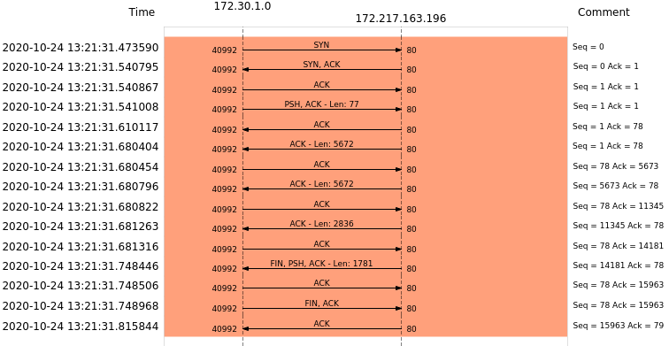
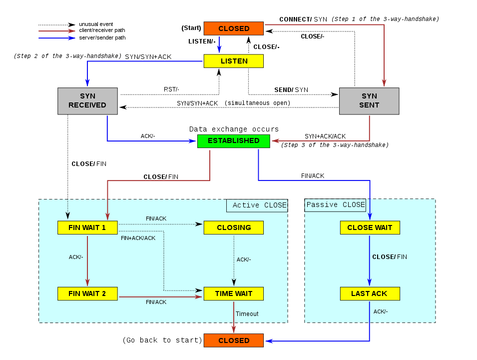
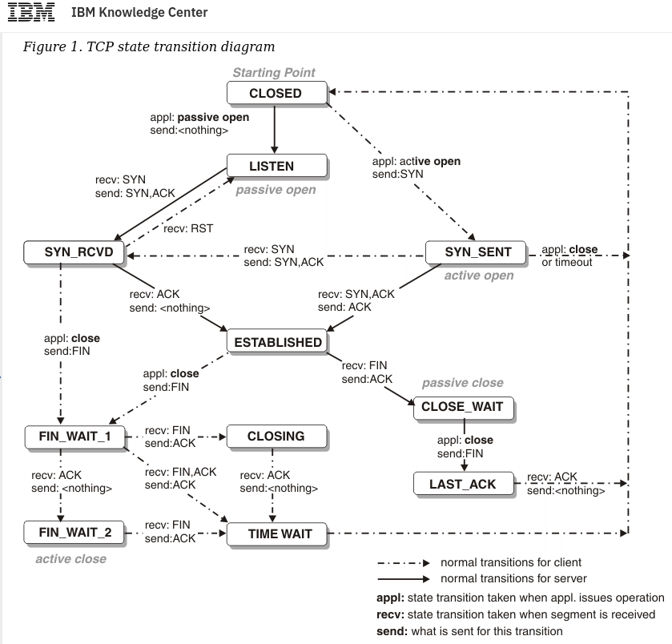
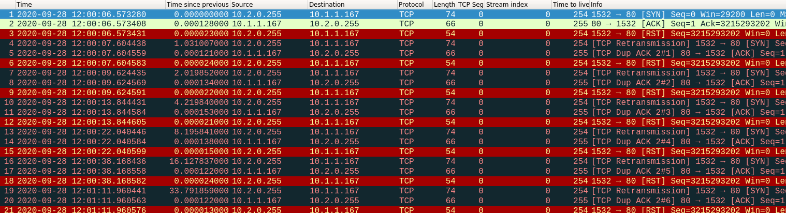
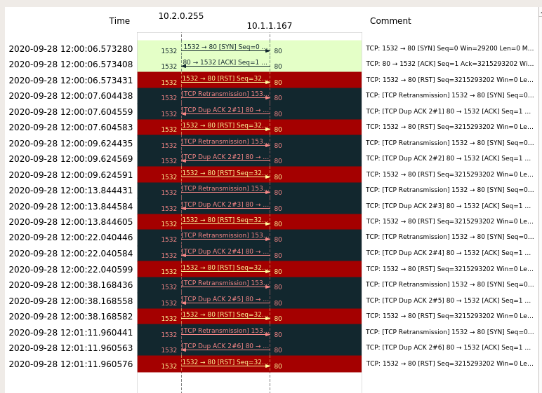

The tcp is a protocol that is responsible for making sure that small
packets of data can get to their destinations reliably.
It has a vast array of features that are designed so that tcp offers
the best throughput and ensures quality of the transmission media,
i.e. TCP will be as fast as possible without abusing the
transmission media/channel.
Table of Contents¶
- TCP Packet
- TCP sockets
- The Sequence number
- The Acknowledgement Number
- A complete TCP flow
- Connection Establishment (3-way handshake)
- Connection Termination (4-way handshake)
- The tcp state machines
- Tcp RST
- TCP Flow Control (Window Size)
- TCP Congestion control
- TIME_WAIT Assassinations
- References
TCP Packet¶
Each layer works with a certain unit of data. This unit is called
the Protocol Data Unit.
In TCP the PDU is a segment. TCP takes the data from upper layers and
divides it into small chunks; then it adds TCP segment information on
these chunks and creates the TCP segments. Then IP information is
added onto these segments to create IP datagrams. These are the PDUs
handled by the lower layer (Network). IP datagrams are called packets.
TCP sockets¶
Sockets act like an interface through which you can send data to
and receive data form. It basically is an abstraction layer on top
the low leave networking hardware stuff (the NIC, the ring buffer, the
OS etc)
To establish a connection you ask your OS to establish a connection to
another computer (ip:port) and once that is done, you (your
application) will have a socket. At the simplest level the socket can
be very simple, you can just send and receive from the socket.
The Sequence number¶
This is a number that is used to track the total amount of data sent
in that session. This has a special function during connection
setup. Apart from that, this value is also used for correct ordering
of packets and to detect packet loss and re-transmission.
It is incremented on every byte sent.
If the SYN flag is set, then it means that this is the first segment
of a connection, thus the sequence number is random. However the
resulting ack of this SYN packet is the random seq number + 1.
Note the increase in the ack no even though no data was sent. This is
called the ghost byte This byte is the reason that the ack no is
always 1 ahead of the last seq no. It's always the next expected seq
no.
The Acknowledgement Number¶
This is the value of the sequence number of the next segment that the
receiver is expecting.
This is used to detect if there is any packet loss, because if the
sender does not a get an ACK within a time-frame, then it will
re-transmit (there are other rules here as well).
Ack is very important in TCP because a lot of functions of TCP
revolves around whether the receiver is getting all the packets
that are being sent. This is what means by a connection oriented
protocol. The sender and the receiver need to be in sync.
TCP also does rate limiting on the sender's side if it figures out
that the channel is getting congested or the receiver is not able
to handle the load. All of this is enabled through the
acknowledgement number.
A complete TCP flow¶
A complete TCP flow includes the following parts.
- Connection Establishment
- Communication
- Connection Termination

Note¶
Once Connection is set up, both sides can send data, thus it does
not make sense to talk in terms of client-server. Because these
things tend to keep changing (unless it makes sense to use
server-client).
We will talk about this-side as the one who is sending the said
packets, and the other side as the side who is the intended
recipient.
Connection Establishment (3-way handshake)¶
As TCP is a connection oriented protocol, both sides need to agree
to a set of rules before any communication can take place. This is
called setting up the tcp connection or connection
establishment and is received through a three-way handshake.
The parts involved are here (in-order):
- SYN
- SYN-ACK
- ACK
SYN¶
When the client wants to establish a new connection with the
server, it sends a packet with the SYN flag set.
This end is now in SYN_SENT state.
SYN-ACK¶
When server gets a request for a new connection (i.e. gets a
packet with the SYN flag set), it sends out a packet with both
the SYN and the ACK flags set.
This serves dual purpose. It tells the client that the server has
in-fact received the SYN and that the server is also ready to start
receiving traffic.
This end is now in SYN_RECEIVED state.
ACK¶
This is used to signal to the server that the client has in-fact received the SYN-ACK.
Connection Termination (4-way handshake)¶
During connection termination a 4-way handshake takes place between
the client and the server. This is done to ensure that both the
client and the server have finished sending data. The handshake
enabled either side to acknowledge that the other side wants to
close to close the connection, but at the same time, the other end
needs the data it asked for.
Imagine a situation where the client is asking for a web-page and
the request is short, so the client sends a FIN as soon as the
request payload is sent. This indicates that it does not intend to
send any more data.
Now, the server can keep on sending as much data as it was asked
(while acknowledging that the client is not going to send
anything). Once the server has finished sending data, it can tell
the client that the server is also going to close its side of the
connection.
The 4 steps are :
- FIN (from Side A; this side is performing the active-close)
- ACK (from Side B)
- FIN (from Side B)
- ACK (from Side A)
(side A & B are arbitrary)
FIN (from side A)¶
This flag is sent by whoever wants to close the connection first.
This indicates to the other end that this side has finished
sending data.
(This side can still receive data from the other side)
ACK (from side B)¶
This is sent when one side receives a FIN. It indicates that the
other side wishes to terminate the connections. Now it informs the
application using the TCP connection that the other side wishes to
close the connection.
FIN (from side B)¶
When the application on side B is ready to close the connection,
it does a close and then a FIN is sent to side A.
At this point the side which originally asked to close the
connection, has received an ACK from its pair, and has also
received a FIN from that side.
This indicates that both sides have acknowledged that they have
finished sending data and are closing the connections
ACK (from side A)¶
Now side A has acknowledged that it has received the FIN from
the other side.
This is important in TCP because in the absence of an ACK the
protocols re-transmission mechanisms kick in.
The tcp state machines¶
The TCP protocol can be represented as a State Machine, using tcp
commands as labels for the transition. The interesting part about
this state machine is that there are two parts of the state machine we
need to keep track of. The client and the server.
This is the photo of the state machine from Wikipedia
{kind=link}

By Scil100, CC BY-SA 3.0, https://commons.wikimedia.org/w/index.php?curid=30810617
This image from IBM makes it quite clear. Look at the Legend for detailed information.
The states are described below for reference.

Note on terms:
- Active Open: This is meant for the side in TCP that opens a connection to a server.
- Passive Open: This is the server that is listening for incoming connection requests
- Active Close: This is meant for the side that closes the connection first.
- Passive Close: This is the side that passively closes the connection.
The states (from the top):
- LISTEN: the TCP state where the end is listening for incoming connections requests, this is a passive open
- SYN_SENT: waiting for a response from a remote tcp end after sending a new connection request
- SYN_RECEIVED: this end has sent a SYN and an ACK in response to the incoming request and is waiting for an ACK from the other end
- ESTABLISHED: The there way handshake is complete and communication can take place
- FIN_WAIT_1: sender has sent a FIN and is waiting for and acknowledgement from the other side OR a simultaneous termination request from the other side
- FIN_WAIT_2: side performing active close has received acknowledgement of FIN and is waiting to get a FIN back from the remote
- CLOSE WAIT: received close request from remote end and is waiting for a close from the application layer
- CLOSING: the sender of termination request is waiting for an acknowledgement
- LAST_ACK: waiting for ack of previously sent termination request
- TIME_WAIT: waiting for enough time to pass to ensure that both sides has ack'ed the termination requests.
- CLOSED: the TCP connection is closed
Tcp RST¶
A discussion on TCP is incomplete without talking about RST
RST is the TCP reset flag which is used to reset the TCP connection.
This is used when something that gone wrong and either end wants to
signal to reset the connection and start a new connection.
TCP Flow Control (Window Size)¶
TCP is a very careful protocol that cares if the data is received
properly or not. In order to do this, it implements flow control and
congestion control. Flow Control is used to make sure that the
sender is not overwhelming the receiver bby sending more data than
what the receiver cna handle.
To enable flow control, every side involved in a TCP connection sends
a window size parameter in every TCP segment. This is used to signal
to the other side, the amount of receive buffer available. The sender
can send only the amount of data available in the receive buffer
untill it must wait for an acknowledgement from the receiver end.
Thus the receiver controls the rate according to the capabilities.
If for whatever reason, the receiver advertises a window size of 0,
then the sender stop transmission and starts a persist timer. Once
this timer runs out, it sends a small packet so that it can get an
updated window size on the acknowledgement from the receiver.
How does this work in practise ?¶
Sender is A; Receiver is B.
When A sends data to B, it gets a window-size from B as a part of
the handshake. Now A can send window-size amount of data in the
form of multiple TCP segments (if-required).
If B is processing incoming segemnts quickly then it will start
sending ACK as soon as possible and these segemtns will contain the
data for the next window-size.
However, let's assume that B is not processing the segments fast
enough. Now the data will keep piling on the buffer and when B will
send abck an ACK it will contain progressively smaller window-size
values.
Once the window size hits 0 from side B, then side A will stop
sending more data untill it gets a window-update. Sender generally
starts a persist timer once receive window is reset to 0, so that it
is not waiting indefinitely untill side B reponds with a new
window-size.
TCP Congestion control¶
TCP uses acknowledgements and RTT information to guess the congestion
status of the network and control its rate.
Haven't studied this much. Will update this section when I do.
TIME_WAIT Assassinations¶
This is a very cool problem that we faced at work.
needless to say, as a person who was not too well versed with TCP, this was an interesting problem to debug.
I leart TCP and wireshark along the way. Win-Win-Win.
So, this is the scenario. Sometimes when the server is in the
TIME_WAIT state, out of order (or delayed) tcp segments can
arrive. These segments will cause the server to send an ACK.
Now if the client is making multiple connections to the server, then
there is a chance that it is reusing some ports (on the client side)
and when it reeives an ACK from the server with same destination and
source ports but a different sequence no the client sends an RST
and resets the connection. This causes the TCP state on the server
side (it was in TIME_WAIT before) to exit.
The error we were facing involved an AWS Application Load
Balancer. The ALB implements some techniques to protect against
Time-Wait Assasinations. It does this by ignoring RST when the
connection is in TIME_WAIT state. This is good for the server, but
the client still sees a bad connection phase with a bunch of RSTs.

Here is an image from a packet trace dring such an event.

Here is a Flow–Graph of the same packet trace
References¶
- https://vincent.bernat.ch/en/blog/2014-tcp-time-wait-state-linux
- https://en.wikipedia.org/wiki/transmission_control_protocol
- https://www.brianstorti.com/tcp-flow-control/
- https://tools.ietf.org/html/rfc1337
- https://benohead.com/blog/2013/07/21/tcp-about-fin_wait_2-time_wait-and-close_wait/
- https://packetlife.net/blog/2010/jun/7/understanding-tcp-sequence-acknowledgment-numbers/
- https://tech.flipkart.com/linux-tcp-so-reuseport-usage-and-implementation-6bfbf642885a
- https://www.ibm.com/support/knowledgecenter/ssltbw_2.1.0/com.ibm.zos.v2r1.halu101/constatus.htm
This is the end for now. As this is a part of my personal notes. I will add to this as I learn more. :)